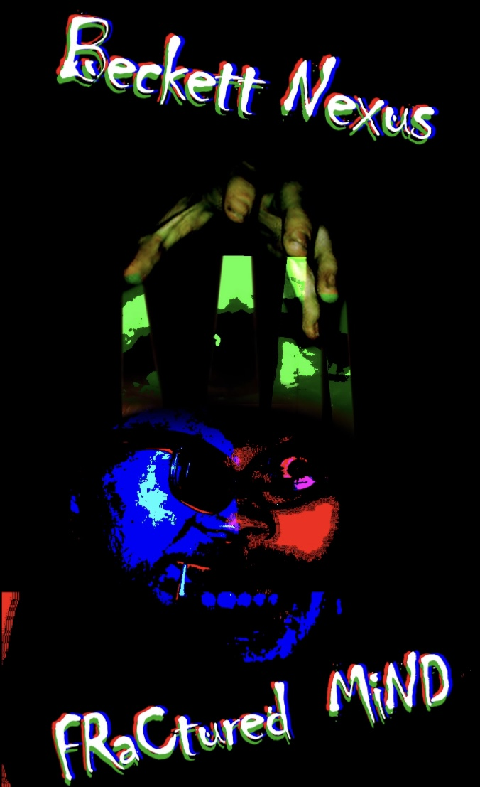
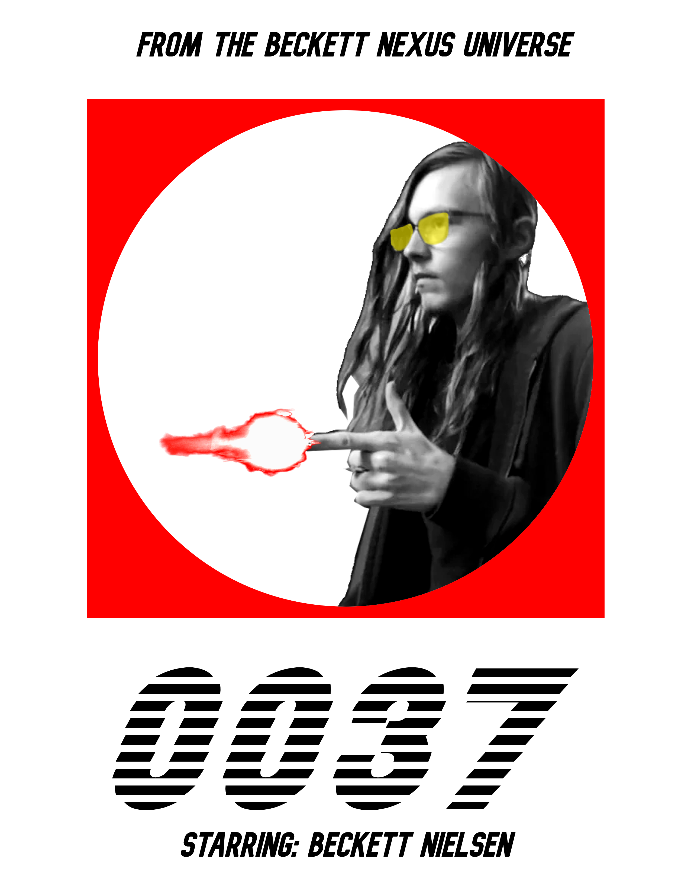

Movie Gallery
A detective spy thriller
Takes place in World Two, a different timeline

The Thrilling Origin of the infamous Super Spy Beckett Nexus
Takes place in World One, the mainstream Nexus timeline

A Western Epic
films directed and edited by Beckett Nielsen
A detective spy thriller
Takes place in World Two, a different timeline
The Thrilling Origin of the infamous Super Spy Beckett Nexus
Takes place in World One, the mainstream Nexus timeline
A Western Epic